Entry Name: Eyes of the City
VAST Challenge 2022
Challenge 2: Patterns of Life
Questions
1 - Characterize the distinct areas of the city and provide rationale with supporting data.
Assuming the volunteers are representative of the city's population, characterize the distinct areas of the city that you identify. For each area you identify, provide your rationale and supporting data. Limit your response to 10 images and 500 words.
Answer (Q1):
Plot usage: Cluster maps, composition views, and zone overlays are used to compare residential, work, and service concentration by area
Short description: The city is organized into high-activity commercial cores and wider residential belts, with mixed-use transition edges
The city can be divided into seven distinct functional areas. We clustered the city using an 80x80 grid. Each grid cell was classified by its dominant driver, such as apartments, jobs/employers, or schools/restaurants. A driver had to represent at least 45% of activity and have 12% higher points than the next driver. Adjacent cells with the same dominant driver were grouped into districts.
The Central Commercial District has the strongest work center, with 991 points, 69.6% work share, and 2.01 jobs per apartment.
The NorthWest Commercial District is a secondary work-oriented area, with 718 points, 64.3% work share, and 1.56 jobs per apartment.
The SouthEast Commercial District is smaller but still work-oriented, with 237 points, 62% work share, and 1.43 jobs per apartment.
The NorthWest Residential District is strongly housing-dominated, with 81.2% home share, 18% work share, and 0.18 jobs per apartment.
The East Residential District is also mainly residential, with 80.8% home share, 18% work share, and 0.19 jobs per apartment.
The Central Residential District is a large housing area, with 524 points, 76.7% home share, and 0.24 jobs per apartment.
The North Residential District is more mixed but still residential, with 61.2% home share, 38% work share, and 0.52 jobs per apartment, suggesting a mixed transition area.
Overall, the city is organized into commercial cores, surrounded by residential belts. The cluster map shows the spatial grouping, while the composition and evidence views justify each classification with activity, home-share, work-share and jobs-per-apartment data. Leisure activity remains low across all districts, so no area is primarily leisure-based.
1. Figure Q1-1 shows the full spatial clustering of the city (basis: 80x80 grid & dominant-driver rule). It provides the baseline view of the seven identified districts and shows the main separation between commercial cores and residential belts
.jpeg)
2. Figure Q1-2 focuses on the Central Commercial District, the strongest work-oriented area. With 991 activity points, 69.6% work share, and 2.01 jobs per apartment, it confirms the central core as the city’s main employment and daytime destination zone
.jpeg)
3. Figure Q1-3 highlights the NorthWest Commercial District, a secondary commercial hub. Its 718 points, 64.3% work share, and 1.56 jobs per apartment support a polycentric structure, where work activity is distributed beyond the central core
.jpeg)
4. Figure Q1-4 emphasizes the clearest housing-dominant areas, especially the NorthWest Residential and East Residential districts. Both have home shares around 81% and very low jobs-per-apartment values, showing where residential trip origins are likely concentrated
.jpeg)
5. Figure Q1-5 shows the more mixed residential-edge especially the North Residential District. Its 61.2% home share and 38% work share indicate a mixed transition zone between housing belts and employment areas, where land use changes gradually
.jpeg)
2 - Busiest areas in Engagement and traffic bottlenecks.
Where are the busiest areas in Engagement? Are there traffic bottlenecks that should be addressed? Explain your rationale. Limit your response to 10 images and 500 words.
Answer (Q2):
Plot usage: Heatmaps, flow links, and corridor comparisons are used to detect recurring hotspots and overloaded routes by time
Short description: Engagement is concentrated in few hubs and corridors, creating predictable bottlenecks during peak hours
The interface traffic plots indicate that Engagement activity is highly concentrated in a small number of destination clusters and corridors, rather than evenly spread across the city. The hotspot figures show repeated high-load venues (especially pub/restaurant anchors), while corridor charts reveal that many trips are directed through only a few strong bidirectional links.
This concentration creates clear bottleneck behavior: a limited set of links carries a disproportionate share of movement, so any local disruption can quickly propagate delays. The hourly and weekday-time plots reinforce this diagnosis by showing synchronized peak waves (commute and after-work periods), where inflow/outflow surges overlap on the same corridors.
Based on the interface evidence, bottleneck mitigation should prioritize (1) the top pressure hubs, (2) the highest-flow corridor pairs between those hubs, and (3) peak-hour management where arrival surges exceed local handling capacity. In short, the city has a corridor-dominated movement pattern with identifiable pressure points that should be addressed first.
1. Figure Q2-1 maps the strongest Engagement hotspots and shows that demand is highly concentrated in specific clusters. It is used to define the primary high-pressure areas that need priority monitoring. The more lager the corridor, the more higher the traffic bottleneck
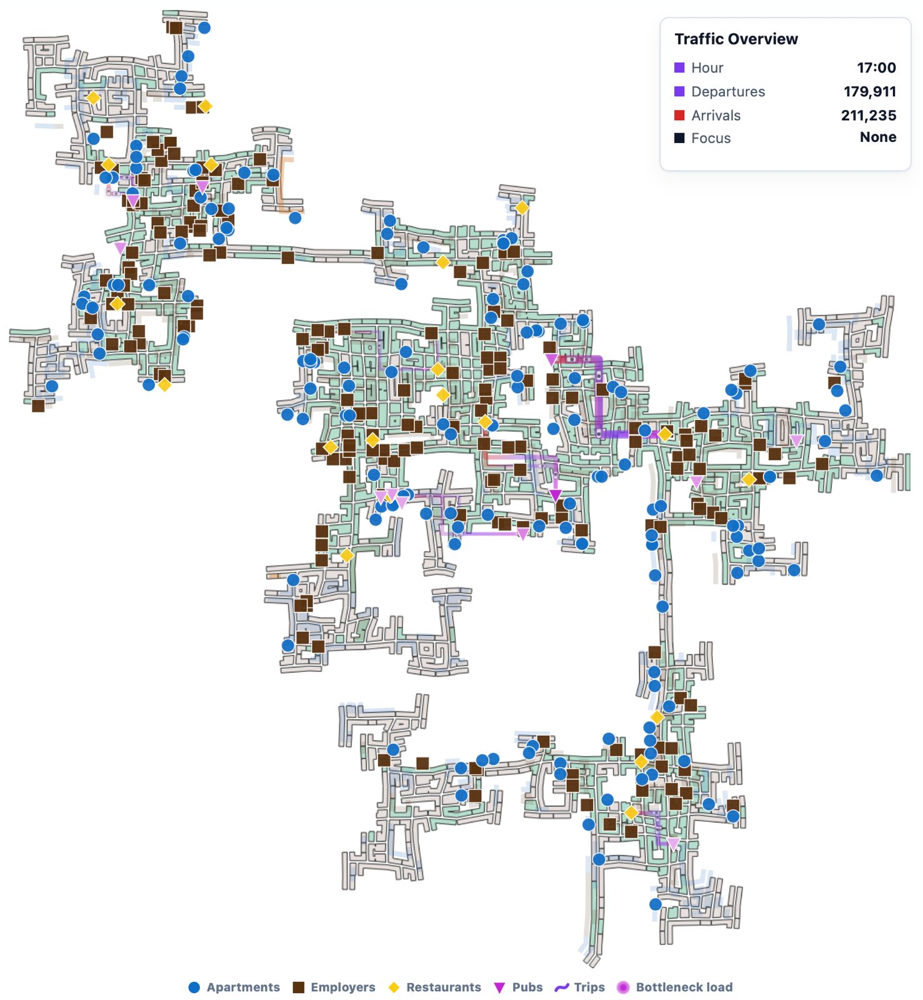
2. Figure Q2-2 shows repeated inflows to the same high-demand venues across different time windows. This indicates persistent hotspot behavior, not isolated one-time crowding events
.jpeg)
3. Figure Q2-3 visualizes corridor concentration where many trips are directed through a limited route set. It identifies the structural backbone of movement and potential single points of failure. The color scale represents the peak load of each pub.
.jpeg)
4. Figure Q2-4 pinpoints the most overloaded links where route load is clearly disproportionate to the rest of the network. These links represent the first bottlenecks to target with traffic-management actions. The color scale shows the departure of the indicated location to the arrival of the indicated location
.jpeg)
5. Figure Q2-5 confirms synchronized peak periods where inflows and outflows stack on the same corridors. This timing overlap explains why delays intensify rapidly during known peak windows
.jpeg)
6. Figure Q2-6 supports intervention prioritization by showing which hubs experience the highest pressure during commute and after-work periods. It is used to align mitigation actions with the highest-impact time and place.
.jpeg)
7. Figure Q2-7 summarizes the corridor-dominated movement pattern and consolidates the final set of pressure points. It provides the decision view for selecting first-round bottleneck fixes. The color scale represents the number of trips during a specific time period
.jpeg)
3 - Two participants with different routines.
Participants have given permission to have their daily routines captured. Choose two different participants with different routines and describe their daily patterns, with supporting evidence. Limit your response to 10 images and 500 words.
Answer (Q3):
Plot usage: Timeline and routine-comparison plots are used to contrast time-of-day activity, movement regularity, and destination type
Short description: One participant follows a stable work-driven routine, while the other has a more flexible home-and-leisure pattern
The interface participant-comparison plots show two clearly different daily routines. The first participant follows a work-structured pattern: repeated daytime movement, stable transitions between home and work zones, and regular activity blocks aligned with weekday rhythm. This profile is characterized by predictable timing and lower dispersion across leisure-heavy venue types.
The second participant exhibits a home-and-leisure dominant pattern: longer residence periods, more irregular transitions, and stronger activity outside classic work-centered windows. The timeline and routine matrices indicate that this participant has broader variation in active hours and destination types, consistent with a less commute-driven schedule.
These two cases demonstrate that city behavior cannot be captured by a single “average” routine. One routine is periodic and commute-oriented; the other is more flexible and socially/leisure distributed. The contrast is persistent across daily and monthly interface views, making them a strong pair for explaining heterogeneous patterns of life.
1. Figure Q3-1 shows Participant A's regular home-work-home cycle across weekdays with clear periodicity. It is used to establish the structured routine profile and the dominant commute rhythm
.jpeg)
2. Figure Q3-2 confirms low timing variation for Participant A, with repeated activity blocks at similar hours. This supports high routine stability and predictable daily transitions
.jpeg)
3. Figure Q3-3 shows Participant B with longer home stays and fewer strictly commute-centered transitions. It captures the second behavioral type: less rigid scheduling and broader non-work activity periods
.jpeg)
4. Figure Q3-4 shows broader hour and destination variation for Participant B across days and contexts. This confirms a flexible routine profile and explains the contrast with Participant A's periodic behavior
.jpeg)
4 - Pattern changes across the dataset span.
Over the span of the dataset, how do patterns change in the city change? Describe up to 10 significant changes, with supporting evidence. Limit your response to 10 images and 500 words.
Answer (Q4):
Plot usage: Monthly heatmaps, trend lines, and stream/network plots are used to track structural changes across 15 months
Short description: The city shows a few strong early shifts (check-ins, social volume), while core daily rhythms stay stable
This approach was applied following Munzner's Nested Model (domain, data abstraction, visual encoding, implementation) and Shneiderman's mantra: Overview First, Zoom and Filter, Details on Demand.
1. Venue check-in volume collapsed after month 1 (Fig 1) March 2022 stands out as visibly darker than every month that followed. From April onward, daily check-ins settled at a lower level and stayed there.
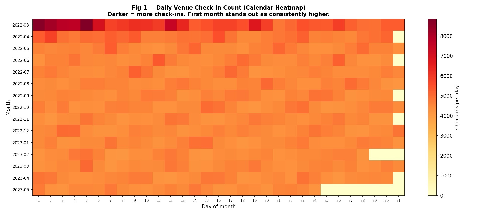
2. Day-1 financial outflow is a structural fixture (Fig 2). The first day of each month shows a sharp red spike. Shelter and education payments all hit at once. It's not an anomaly; it's the city's financial heartbeat.
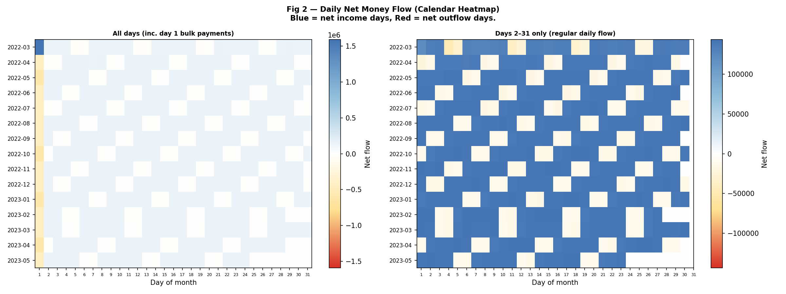
3. Weekdays earn, weekends spend (Fig 2) Strip out the day-1 spikes and a clear checkerboard appears. Weekdays run net blue (income beats outflows), weekends run red and white. The pattern holds across all 15 months.
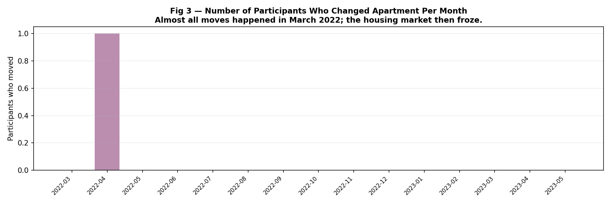
4. Almost nobody moved house (Fig 3) Just one participant changed apartments in the entire window, back in April 2022. Everyone else stayed put from month one. The housing market froze almost immediately.
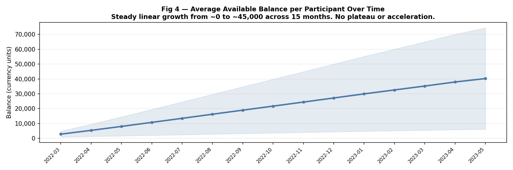
5. Wealth grew in a straight line (Fig 4) Average balance climbed from near zero to roughly 45,000 at a remarkably steady rate, with no seasonal dips and no surges. Earnings and spending stayed in near-perfect balance.
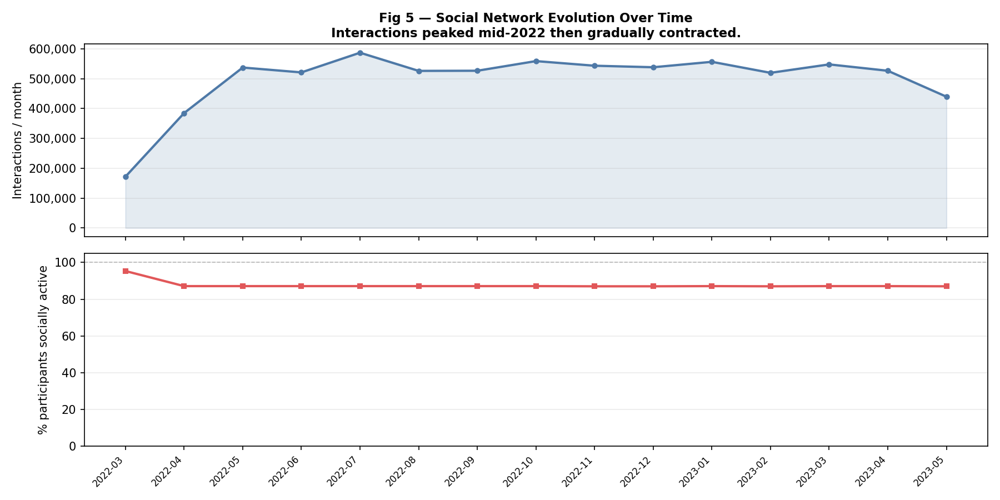
6. Social activity peaked mid-2022, then faded (Fig 5) Monthly interactions jumped from around 200k in March to a peak of 600k in July and August, then gradually fell off. The share of socially active participants dropped from 95% to 87% in April and flatlined. About 130 people quietly checked out of social life after the first month.
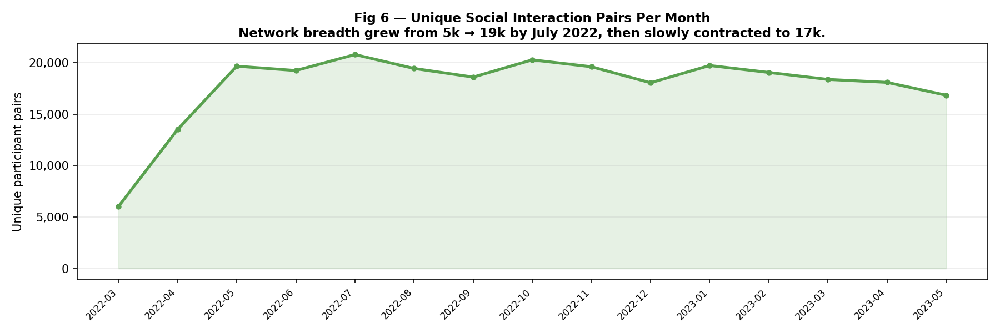
7. The social network expanded, then settled (Fig 6) Unique interacting pairs grew from 5,000 in March to 19,000 by July 2022, before drifting back to 17,000 by May 2023. New connections formed quickly through mid-2022, then the network found its shape.
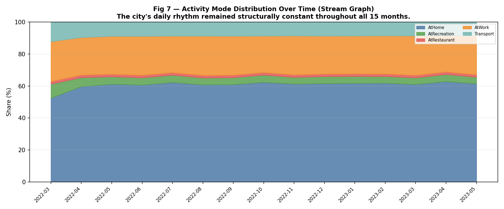
8. The daily rhythm never really changed (Fig 7 & 8) Through all of this, the basic shape of daily life stayed remarkably stable: how people divided their time between home, work, transit, restaurants, and recreation. The activity stream graph (Fig 7) and venue check-in proportions (Fig 8) show no meaningful drift in the underlying routine.
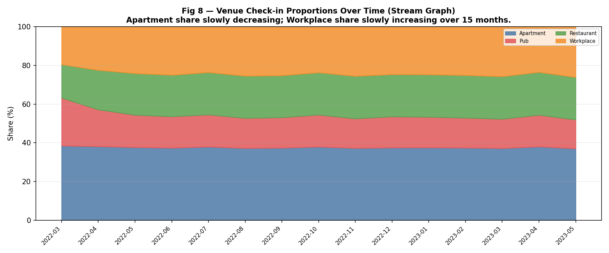
9. Trips became more social over time (Fig 9) The share of Recreation (Social Gathering) trips kept rising at the expense of commutes. Even as overall interaction volume dropped, the trips people were taking leaned increasingly social.
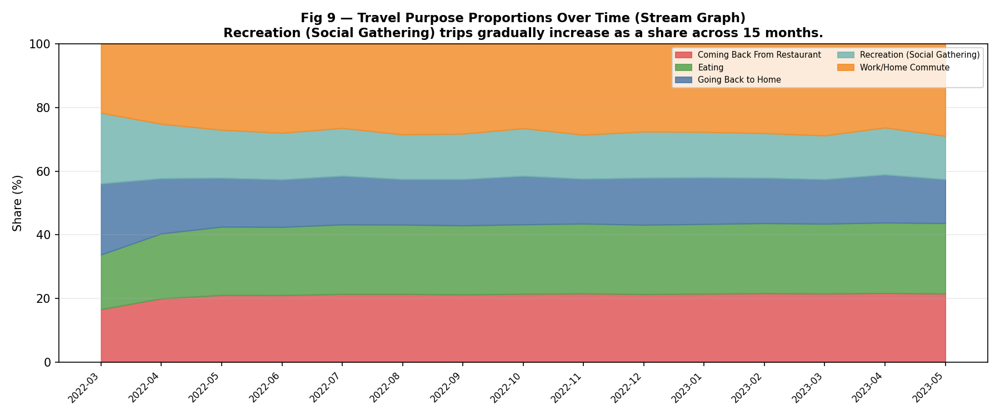
10. Rent adjustments happened once and never again (Fig 10) 125 rent adjustment transactions occurred in March 2022 and ~5 in April. From May onward, zero adjustments for 13 consecutive months: entirely consistent with the immobility seen in Fig 3.
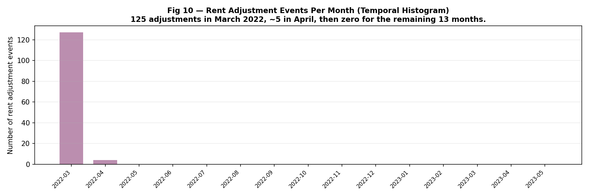